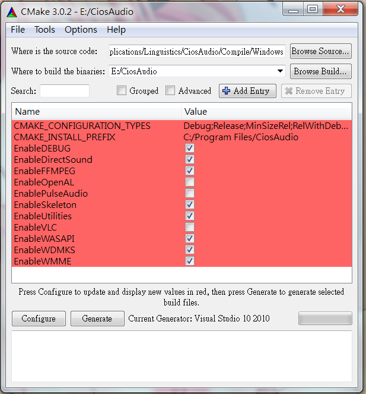
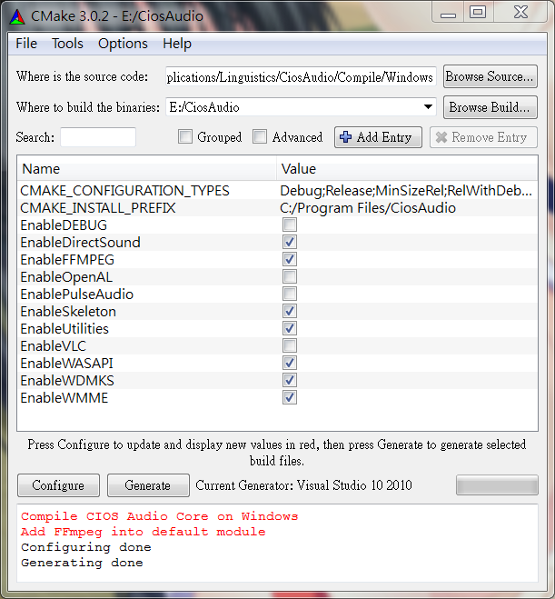

Windows平台編譯
在環境已經配置好的狀況下，編譯CIOS Audio Core是相當簡單的：|
mkdir BuildCiosAudioCore |
如此即可產生CiosAudio.sln
x64
|
cmake -G "Visual Studio 10 Win64" $CIOSAUDIOROOTDIR\Compile\Windows |
打開Visual Studio編譯CiosAudio.sln即可產生CaCore.lib。
修改設定
|
mkdir BuildCiosAudioCore |

Configure
Generate

打開Visual Studio編譯修改設定後的CiosAudio.sln即可產生CaCore.lib。